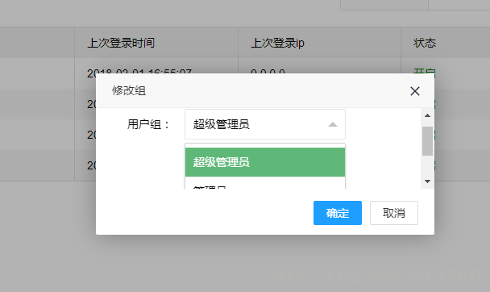
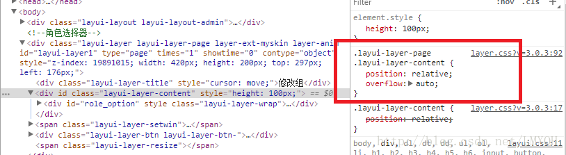

如下图，弹窗固定了高宽，但是里面的 select 下拉框，在显示的时候却被弹窗挡住了，导致滚动条出现。
其实是layui样式设置的问题，如图：
可以看到在layui内部样式中，对.layui-layer-content定义了overflow属性且为auto,只要取消这个属性，就不存在遮挡问题。
可以为出现 select 被遮挡的弹框通过 skin 设置自定义属性
layer.open({
skin: 'demo-class'
});
body .demo-class .layui-layer-content {
overflow: visible;
}
layer.open({
type: 2,
content: ['http://sentsin.com', 'no']
});
layer.open({
content: '浏览器滚动条已锁',
scrollbar: false
});
因为项目框架用了iframe，所以在用layer时，默认layer.open弹出的窗口只能在iframe子窗口区域显示。现在想让layer在父窗口或者说框架的最顶层显示，需要使用top.layer.open或者parent.layer.open方法：
layui.use('layer', function(){
var layer = layui.layer;
});
layer.open() //在当前层弹出
parent.layer.open() //在父级层弹出
parent.parent.layer.open() //在父级的父级层弹出
top.layer.open() //在最顶层弹出
只需要为area设置宽度即可，area:'500px'
layer.open({
type: 1,
content: ''
,area: '500px'
});
在iframe页面中每次可能改变高度时，执行以下代码：
var index = parent.layer.getFrameIndex(window.name);
parent.layer.iframeAuto(index);
或者在success回调函数中执行：
layer.open({
type: 2
,title: "申请备案"
,content: ["/Login/ApplicationFiling?name=" + $("#name").val(), 'no']
,area: "612px"
,success: function (layero, index) {
layer.iframeAuto(index);
}
})
在iframe页面中执行layer.iframeAuto(index)时，取的高度不正确，少一部分，原因不明（可能是因为页面未加载完毕就执行了计算iframe高度的代码）；在success回调函数中执行layer.iframeAuto(index)时，取的高度是正确的；